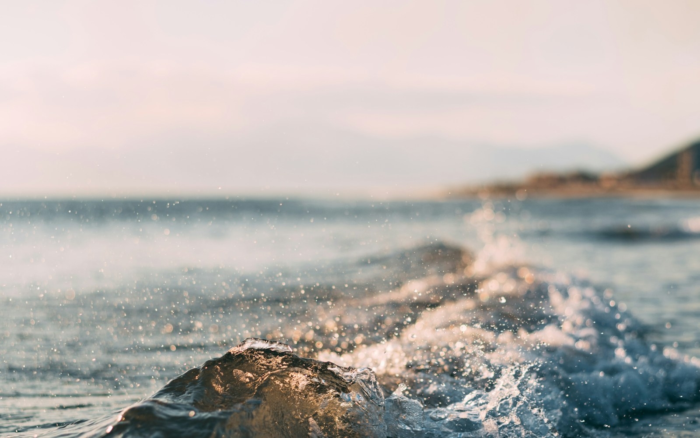

清晨的岸线
在海醒来之前
天刚亮的时候，海岸的颜色很淡。沿着沙滩走一段路，听鞋底与沙粒细小的摩擦声。不必急着赶往哪里，看着远处的光慢慢亮起来，这一天就已经有了一个不错的开始。

LET THE DAYS FLOW
写给有海风经过的日子。
清晨的岸线
天刚亮的时候，海岸的颜色很淡。沿着沙滩走一段路，听鞋底与沙粒细小的摩擦声。不必急着赶往哪里，看着远处的光慢慢亮起来，这一天就已经有了一个不错的开始。
午后的风
海边的下午，适合带一本不着急读完的书。读几页，抬头看看浪，再读几页。那些被行程填满的时间，偶尔也可以空出来，让注意力停在此时此刻。
回程的口袋
不必把每一段旅程都变成纪念品。有时候，最值得带走的是一阵风、一种颜色，和回程时心里那一点平静。让贝壳留在沙滩上，让记忆跟着自己回家。
ABOUT THESE LETTERS